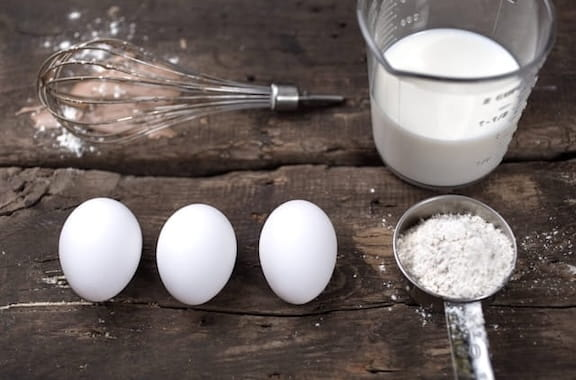

Chocolate Chip Cookies
These classic chocolate chip cookies are soft, chewy, and packed with rich chocolate flavor. Follow this simple recipe to bake a delicious batch!
Ingredients
- All-purpose flour
- Chocolate chips
- Baking soda
- Butter, sugar, & vanilla extract
Instructions
- Preheat your oven to 350°F (175°C) and line a baking sheet with parchment paper.
- In a bowl, whisk together the flour and baking soda. In another bowl, beat the butter, sugar, and vanilla extract until creamy.
- Gradually add the dry ingredients to the wet mixture, then fold in the chocolate chips.
- Drop small spoonfuls of dough onto the baking sheet. Bake for 8-10 minutes, then let cool before enjoying!
